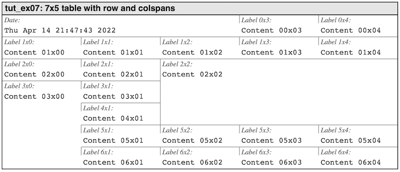
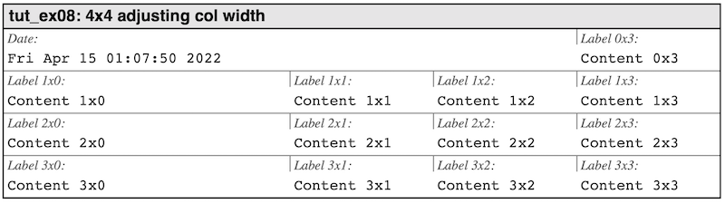

- Generated on Sun May 1 2022 13:14:00 for libhpdftbl by
 1.9.3
1.9.3
|
libhpdftbl 1.0.0-beta3
Table construction library for Haru PDF library
|
The table can be modified both by adjusting the width of columns as well as how many rows and columns a cell is spanning.
A common way to modify a table is to have a cell spanning either multiple columns, multiple rows or both. This is done using the function
The specified (r,c) is the row and column of the upper left cell in merged cell that spans rowspan rows and colspans columns. This is also the row and col coordinates used to accessing the combined cell.
To illustrate this we will create a table with seven rows and five columns. We will merge three cells using these cell-spannings:
For the data we will use the same setup as in tut_ex06.c This will then give the result shown in Figure 8.

Figure 8: *Having cells spanning multiple rows and columns. tut_ex07.c*
By default or column widths are divided equally regardless of the content. The width can be adjusted by explicitly set the relative width of a column as a percentage of the total table width. This is done with the function
The width is set as a percentage of the total width and is specified as a floating point value in the range [0.0, 100.0]. An example of this is shown in Figure 9. below. An arbitrary number of columns can be given a width. For best result leave at least one column undefined and whatever remains of the table width will be assigned to that column. There is an error to try to specify a total column width > 100%.

Figure 9: *Adjusting width of first columns. tut_ex08.c *